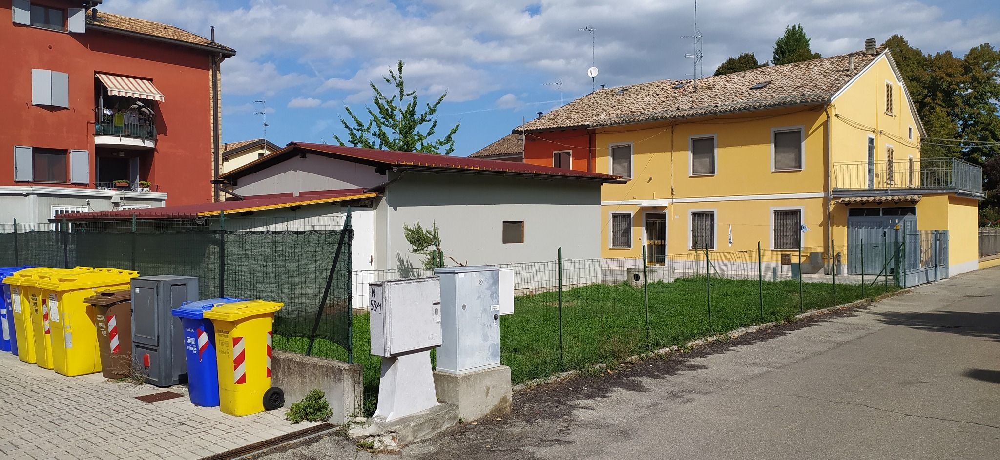
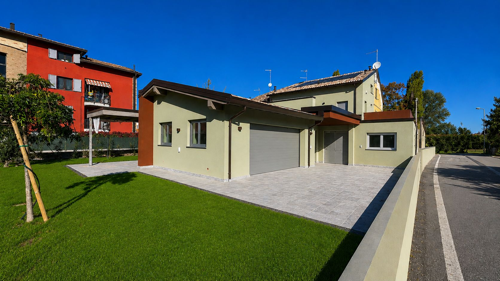

Una casa viene progettata in un momento preciso della nostra vita, ma dovrebbe continuare ad avere senso molto più a lungo di quanto riusciamo davvero a immaginare.
Quando compriamo un abito lo scegliamo pensando a come siamo oggi, a quello che ci piace e all'uso che pensiamo di farne e, anche quando acquistiamo qualcosa di buona qualità immaginando di utilizzarlo per molti anni, sappiamo che prima o poi cambieranno il nostro gusto, le nostre necessità o semplicemente il modo in cui ci vestiamo. In fondo è abbastanza normale, perché gli abiti appartengono a periodi relativamente brevi della nostra vita e nessuno di noi, scegliendone uno, si domanda seriamente se potrà continuare a utilizzarlo tra trenta o quarant'anni.
Per tutte le stagioni.
Con una casa facciamo qualcosa di molto diverso, perché la progettiamo inevitabilmente pensando alle persone che siamo oggi, alle nostre abitudini e a quello che desideriamo in questo momento, ma contemporaneamente stiamo costruendo qualcosa che potrebbe accompagnarci per una parte molto lunga della nostra vita e probabilmente continuare a esistere anche dopo di noi.
Possiamo provare a immaginare come vivremo tra dieci o vent'anni e durante il progetto credo sia giusto farlo, ma oltre un certo punto diventa un esercizio nel quale le nostre previsioni valgono molto poco, perché non sappiamo come cambierà il nostro lavoro, quali persone vivranno con noi, quali necessità avremo o semplicemente che cosa considereremo importante.
Compriamo abiti che servono per una stagione, mentre costruiamo case che devono attraversare tutte le stagioni della vita. Forse proprio per questo una casa non dovrebbe essere progettata cercando di indovinare il futuro, ma evitando, per quanto possibile, di renderlo più difficile.
La casa che progettiamo è quella di oggi.
Quando iniziamo un progetto abbiamo davanti persone che si trovano in un momento preciso della loro vita e abbiamo bisogno di capire come vivono, quali sono le loro abitudini, che cosa desiderano e quali problemi vorrebbero risolvere attraverso la nuova casa, perché è inevitabilmente da questa conoscenza che dobbiamo partire.
Non penso però che dovremmo chiedere a quelle stesse persone di immaginarsi continuamente tra trenta o quarant'anni, rinunciando magari a qualcosa che desiderano oggi per prepararsi a una condizione futura che potrebbe non verificarsi mai, perché finiremmo per progettare una casa meno adatta al presente nel tentativo, abbastanza improbabile, di renderla perfetta per un futuro che non conosciamo.
Il problema quindi non è progettare oggi la casa che ci servirà domani, ma cercare di capire se alcune delle decisioni che stiamo prendendo per rispondere molto bene alle esigenze di oggi rischiano di rendere inutilmente difficili i cambiamenti che potrebbero arrivare.
Non possiamo prevedere il futuro, ma possiamo almeno cercare di non impedirlo.
Alcune decisioni durano più di altre.
Durante un progetto prendiamo continuamente decisioni che non hanno tutte lo stesso peso nel tempo. Cambiare il colore di una parete sarà relativamente semplice, modificare la funzione di una stanza potrebbe esserlo ancora, mentre intervenire sulla struttura, sulla posizione di una scala, sugli accessi o su alcune parti degli impianti può diventare molto più complicato quando la casa è stata costruita.
Credo quindi che una parte del nostro lavoro consista anche nel riconoscere questa differenza, perché non tutto deve essere progettato pensando a quello che potrebbe succedere tra vent'anni, ma alcune scelte meritano di essere osservate anche da quella distanza proprio perché sappiamo che modificarle successivamente potrebbe essere difficile o costoso.
Una stanza, per esempio, può essere pensata molto bene per la funzione che deve avere oggi senza essere necessariamente dimensionata e organizzata in modo tale da poter fare soltanto quello per tutta la propria esistenza. Uno studio può diventare una camera, una camera può avere un altro uso e una parte della casa può assumere nel tempo un'autonomia che inizialmente non era necessaria, purché alcune decisioni prese molto prima non abbiano reso impossibile farlo.
Non significa predisporre continuamente trasformazioni che forse non avverranno mai, ma lasciare alla casa un certo margine di tolleranza nei confronti della vita.
Non sappiamo che cosa cambierà.
Quando parliamo di una casa capace di durare nel tempo viene abbastanza naturale pensare ai figli che crescono e poi se ne vanno, ma sarebbe una visione molto limitata di quello che può succedere durante la vita di una casa.
Possiamo non avere figli, vivere soli oppure in coppia, possiamo cambiare lavoro e cominciare a trascorrere molto più tempo in casa, avere bisogno di uno spazio che prima non serviva, ospitare qualcuno per un periodo lungo, desiderare maggiore indipendenza tra parti della casa oppure, semplicemente, accorgerci che a distanza di anni il nostro modo di vivere non assomiglia più molto a quello che avevamo raccontato al progettista durante i primi incontri.
Anche noi cambiamo fisicamente e quello che a quarant'anni non rappresenta alcun problema potrebbe diventarlo più avanti, ma questo non significa che ogni casa debba essere progettata fin dall'inizio come se fossimo già anziani, così come non avrebbe senso organizzare ogni spazio per tutte le persone che potrebbero ipoteticamente abitarlo in futuro.
Se cercassimo davvero di rispondere contemporaneamente a tutte queste possibilità probabilmente non otterremmo una casa più flessibile, ma semplicemente una casa nella quale avremmo rinunciato a molte decisioni precise per conservare possibilità che forse non utilizzeremo mai.
Non tutte le case devono cambiare insieme a noi.
Quando ragioniamo sulla capacità di una casa di adattarsi nel tempo credo sia infatti importante non arrivare alla conclusione che ogni progetto debba essere in grado di seguire qualsiasi cambiamento della nostra vita, perché qualche volta può essere molto più semplice accettare che una casa che ha funzionato bene per noi per molti anni, a un certo punto, non sia più quella giusta.
Le case si possono vendere e questa possibilità fa parte della loro vita esattamente come le trasformazioni che possiamo fare al loro interno. Se una casa è stata progettata per rispondere bene alle esigenze di una coppia o di una famiglia in un certo momento della vita, quelle stesse esigenze potrebbero appartenere, vent'anni dopo, a qualcun altro che sta vivendo oggi quello che noi vivevamo allora.
Non credo quindi che la flessibilità debba diventare la necessità di predisporre una casa affinché possa trasformarsi in qualsiasi cosa, anche perché questo rischierebbe di farci rinunciare a soluzioni molto precise e interessanti soltanto per conservare possibilità che forse non utilizzeremo mai. Mi interessa piuttosto capire, durante il progetto, quali scelte siano così specifiche da funzionare soltanto per noi e quali invece, pur nascendo dalle nostre esigenze, possano conservare un valore anche per altre persone.
Una casa può essere molto personale senza dover diventare incomprensibile per chi verrà dopo.
Una casa è anche un patrimonio.
Non tutti costruiscono una casa pensando di abitarla per tutta la vita e lasciarla un giorno in eredità. Qualche volta sappiamo già che potrebbe essere una tappa, altre volte non lo sappiamo ancora e in altri casi la decisione di costruire nasce anche dalla volontà di investire una parte importante del proprio patrimonio in qualcosa che, oltre a essere abitato, dovrà conservarne il valore.
Credo che anche questo faccia parte delle responsabilità del progetto, perché una casa estremamente caratterizzata intorno a esigenze molto particolari può funzionare perfettamente per chi l'ha commissionata ma diventare più difficile da comprendere, utilizzare o acquistare per qualcun altro.
Questo non significa progettare pensando continuamente a un ipotetico acquirente futuro, perché sarebbe un modo piuttosto triste di costruire la propria casa e finirebbe probabilmente per produrre edifici tutti uguali. Significa però ricordarsi che molte delle qualità che rendono una casa interessante per noi possono continuare ad avere valore anche indipendentemente da noi.
La luce, il rapporto con il luogo e con il giardino, una buona proporzione degli ambienti, la possibilità di arredarli in modi diversi, l'orientamento, il comfort e la qualità con cui la casa è stata costruita non appartengono soltanto alle persone per le quali sono stati pensati e possono continuare a essere riconosciuti anche da chi arriverà dopo.

Prima

Dopo
Quanto deve durare, allora, un progetto?
Una casa può durare molto più a lungo delle persone che l'hanno costruita, mentre il progetto nasce inevitabilmente dalle esigenze che quelle persone avevano in un momento preciso e credo che proprio questa differenza renda impossibile pensare di poter risolvere oggi tutto quello che potrebbe succedere domani.
Possiamo però cercare di distinguere ciò che deve rispondere molto bene alla nostra vita presente da ciò che potrebbe condizionare inutilmente quella futura, possiamo lasciare qualche possibilità senza essere obbligati a prevedere come verrà utilizzata e possiamo anche accettare che, a un certo punto, quella casa non debba necessariamente trasformarsi ancora una volta per continuare a seguirci.
Potrebbe essere arrivato semplicemente il momento in cui diventa la casa di qualcun altro.
Per questo penso che la durata di un buon progetto non si misuri soltanto nella sua capacità di rimanere identico o di trasformarsi continuamente, ma anche nella possibilità che le qualità per cui quella casa è stata progettata continuino ad avere senso quando cambiano le persone che la abitano.
Non possiamo sapere quale sarà la prossima stagione della vita di una casa, ma possiamo cercare di progettarla senza pensare che quella che conosciamo oggi debba necessariamente essere l'unica.